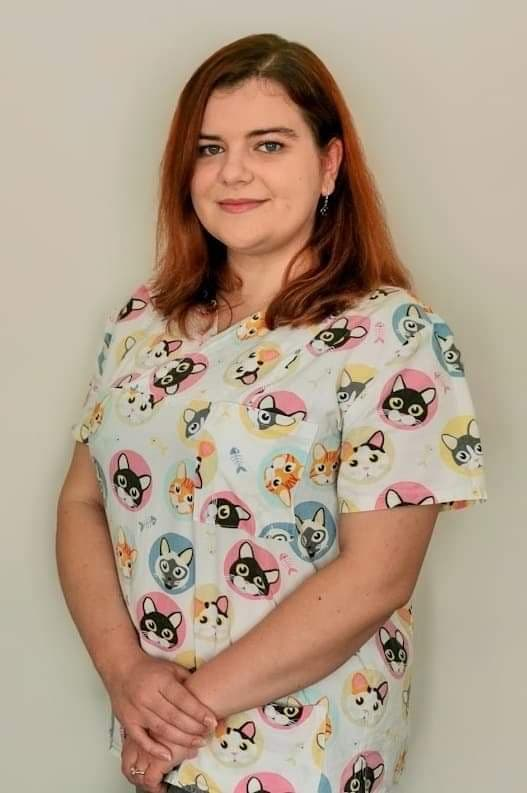
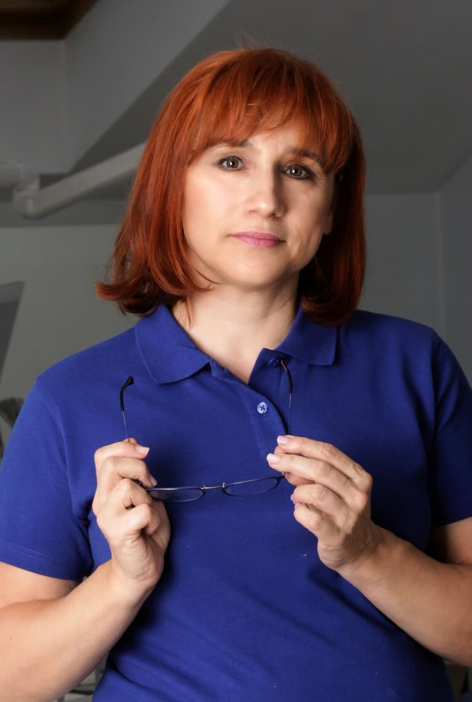

Twój uśmiech jest najważniejszy
Codziennie pracujemy nad tym, aby stworzyć piękny i zdrowy uśmiech u każdego z Was.
Nasza oferta
Nasz zespół
-
Gabriela Fryc
asystentka stomatologiczna
Doskonale organizuje pracę w gabinecie. Jest bardzo zaangażowana i zawsze chętna do pomocy. Po pracy dużo spaceruje i spełnia się artystycznie.
-
Aleksandra Urban
lekarz dentysta
Absolwentka wydziału lekarsko-dentystycznego Uniwersytetu Medycznego w Lublinie. Lekarz z wieloletnim doświadczeniem w leczeniu dzieci i dorosłych. Specjalizuje się w stomatologii estetycznej, endodoncji i protetyce. Prywatnie dumna mama Amelki i Kuby.
-
Ewelina Wilk
asystentka stomatologiczna
Sprawnie asystuje przy zabiegach i dba o porządek w gabinecie. Obsługuje również recepcję. Zawsze miła i uśmiechnięta.
-
Dominik Kluz
lekarz dentysta
Absolwent Warszawskiego Uniwersytetu Medycznego . Zajmuje się chirurgią dzieci i dorosłych, w tym usuwaniem ósemek, zębów zatrzymanych i podcinaniem wędzidełek. Jest też naszym ekspertem od medycyny estetycznej.
-

Joanna Wolan
lekarz dentysta
Absolwentka Pomorskiego Uniwersytetu Medycznego w Szczecinie, nasza specjalistka od leczenia najmłodszych pacjentów. Swoją pracę wykonuje z uśmiechem, empatią i zaangażowaniem.
-

Monka Ruchała
lekarz stomatolog
Absolwentka Akademii Medycznej w Lublinie. Zajmuje się leczeniem ortodontycznym dzieci i dorosłych. Jest osobą doświadczoną i wykwalifikowaną.
O nas
Gabinet Urban Stomatologia powstał 6 lat temu. Naszym priorytetem jest komfort i zdrowie pacjenta. Pragniemy, aby wizyty w naszym gabinecie były przyjemnością, dlatego zawsze bardzo się staramy, aby czas spędzony na dbaniu o piękny i zdrowy uśmiech minął w miłej atmosferze i bezboleśnie. Zajmujemy się leczeniem dzieci i dorosłych. Jako rodzice, wiemy jak szczególnie ważny jest odpowiedni kontakt z dziećmi, aby leczenie było dla nich bezstresowe i skuteczne. Rozwijamy się dla Was. Od niedawna pracujemy w nowym budynku Kliniki Zdrowia, gdzie dysponujemy nowoczesnym wyposażeniem i wygodnym wnętrzem. Powiększamy również zespół, aby móc oferować Państwu jak najszersze możliwości leczenia i jak najkrótszy czas oczekiwania na wizytę. Oprócz tego stale podnosimy swoje kwalifikacje uczestnicząc w szkoleniach i kursach medycznych.